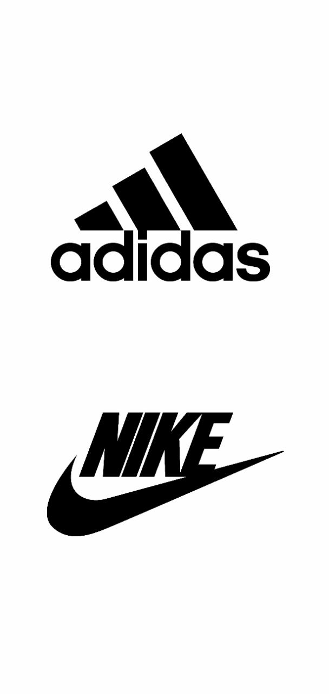

بسم اللە
azhin is a website developer and programmer with over 5 years of experience. He is proficient in a variety of programming languages, including HTML, CSS, JavaScript, PHP, and Python. He is also experienced in using a variety of web development frameworks, such as WordPress, Drupal, and Magento. azhin is a highly motivated and results-oriented individual. He is always looking for new challenges and opportunities to learn and grow. He is also a team player and is always willing to help others. In his previous role, azhin was responsible for developing and maintaining a large e-commerce website. He also worked on a variety of other projects, including developing a custom content management system for a non-profit organization and developing a mobile app for a small business. azhin is passionate about web development and is always looking for new ways to use technology to solve problems. azhin is a valuable asset to any team and is sure to make a significant contribution to any project. Here are some specific examples of Bryar's work:
reklam
about us
© 2023 Digital Development Association , All Rights Reserved